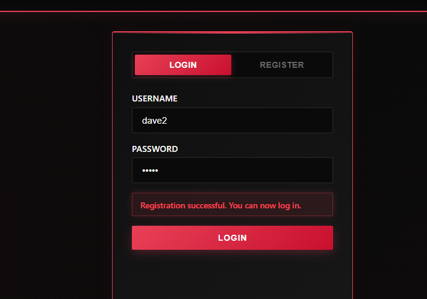

Hi, I'm Shreyas Swaroop
Recent graduate from The Pennsylvania State University with a B.S. in Enterprise Technology Integration (ETI), specializing in data analysis, systems integration, and full-stack application development.
MyMovieList (MovieDB412)
Full-stack movie discovery and watchlist management web application built with React, Node.js/Express, and MySQL, integrating real-time catalog and streaming availability data from The Movie Database (TMDB) API.
- Full-Stack Architecture: Engineered a RESTful Express backend using a Facade service pattern alongside a React 19 + Vite frontend with reactive state management.
- Relational Database & Auth: Designed a normalized MySQL schema (users, watchlists, watched history) secured with bcrypt password hashing and JWT authentication.
- Social & Discovery Features: Built live movie search, watch-provider lookups, watched-history tracking, and shareable friend watchlists.
March Madness Upset Risk Dashboard
Built an end-to-end data pipeline and interactive BI dashboard in Power BI combining historical Kaggle tournament results, advanced team metrics, and betting market expectations.
- Advanced ETL & Power Query: Transformed messy string codes into numeric seed values and performed composite-key merges across star-schema tables.
- Custom Metric Design: Engineered binary upset flags, favorite/underdog indicators, and matchup gap calculations to quantify risk.
- Data Storytelling: Designed a three-tiered analytical dashboard guiding users from historical trends and current team strength (ESPN BPI via cbbdata) to real-time matchup predictions.
NFL Draft IQ & Combine IQ Case Study
Modeled an enterprise-grade cloud system architecture leveraging AWS to convert raw scouting and performance data into real-time interactive insights for fans and analysts.
- Cloud Data Pipeline: Designed automated ingestion workflows using AWS Lambda, secure structured storage via Amazon S3, and interactive analytics powered by Amazon QuickSight.
- Conversational GenAI: Conceptualized the Draft IQ Assistant powered by Amazon Q Business for natural-language conversational analytics.
- Rigorously Modeled SDLC Artifacts: Engineered comprehensive UML use-case diagrams, swimlane activity charts, sequence diagrams, and normalized ER database schemas.
Full-Stack Social Networking Application
Developed a full-stack social networking application as part of a collaborative academic project in a Penn State cloud computing course. The application integrates a React frontend, Node.js/Express backend, and MySQL relational database to support secure user accounts and social interactions.
- Full-Stack Architecture: Integrated React and Vite frontend components with RESTful Express API endpoints to enable communication between application layers.
- Database Management & Authentication: Used MySQL database operations alongside JWT-based authentication and bcrypt password hashing to support account management and secure user access.
- Social Networking Features: Built functionality for user registration, login, friend requests, friend acceptance and rejection, and relationship management.
- Systems Integration & Collaboration: Applied relational database concepts, asynchronous API requests, and modular software development practices within a collaborative group environment.
Academic Group Project | React, JavaScript, Node.js, Express.js, MySQL, REST APIs, JWT, bcrypt
Application Screenshots


HAX Small Business Pizzeria Starter Kit
Designed and developed a modular, reusable small business website template within Penn State's open-source HAX platform. Built custom web components using the Lit library and structured site content with JSON Outline Schema (JOS).
- Novice Mode Content Locking: Guarded editing interface allowing non-technical business owners to update menus and hours without risking layout stability.
- API Integrations: Embedded Google Maps API for automated location rendering and Yelp review APIs for social proof.
- Streamlined Ordering: Connected direct links to third-party delivery platforms (DoorDash) and PDF/JPEG menu uploads.
github-rpg-contributors
A custom web component widget that visualizes GitHub repository contributors as RPG characters using live GitHub API data.
- Real-time data fetching from the GitHub API.
- Dynamic RPG character avatar generation.
- Customizable organization, repository, and contributor display limits.
Data Entry Clerk – Centurion Health
June 2024 – October 2026
- Maintained and validated company and contractual records across internal systems, ensuring data accuracy, consistency, and confidentiality.
- Generated reports and managed records to support daily administrative and business operations.
Information Systems Engineer Intern – AAMC
June 2023 – August 2023
- Supported business analysts with systems analysis, requirements gathering, and documentation of existing ("AS-IS") business processes.
- Participated in Agile Scrum meetings, backlog refinement sessions, and focus groups to develop user stories and business models.
Tutor/Manager – Kumon
August 2019 – August 2022
- Tutored K–12 students in mathematics and English while communicating academic progress to parents.
- Managed daily operations, including payment processing, facility management, and student enrollment.
I'm an Indian-American professional who graduated from Penn State University with a B.S. in Enterprise Technology Integration. I'm passionate about solving complex operational and technical problems through structured data analysis, systems design, and full-stack web applications.
Outside of tech, I love hiking, listening to and making music, and playing volleyball. These creative and active outlets keep me balanced, fuel my curiosity, and make me a more well-rounded technologist.
Email: shreyasniraj@gmail.com
Phone: 215-932-7244